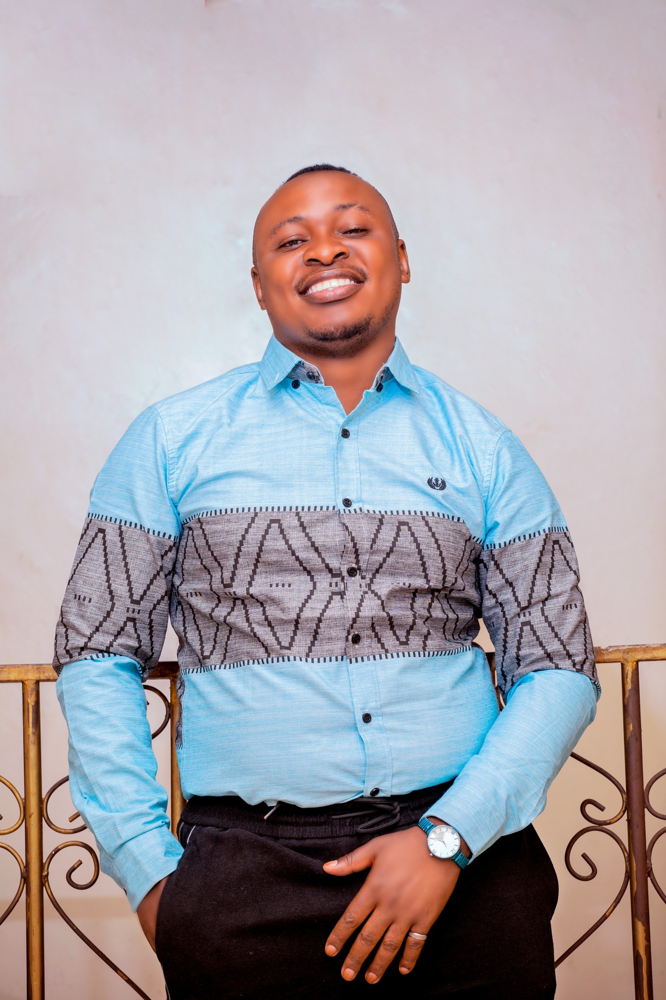

Fatima Praying Center for All Nations – providing homage for PWDs, Orphans, Widows and Elders through faith, education and community.
Witness the transformative journey — orphan support, prayer breakthroughs, community empowerment, and the heart of Fatima Praying Center.
Experience the spiritual revival and stories of healing at FAPCAN.
How FAPCAN reaches orphans, widows, and PWDs with love and dignity.
Daily worship, healing sessions and the power of intercession.
Inspirational story of restoration and hope through FAPCAN’s support.
Alfred Bwambale shares the vision behind Fatima Praying Center for All Nations.
Fatima Praying Center for All Nations (FAPCAN) was born from a vision of prayer and community transformation, serving Kidodo, Kasese. We welcome everyone regardless of tribe, religion or background.
Through education, prayer, film production (Save Souls Film Industry), and direct aid, we transform the lives of vulnerable children, PWDs, widows and elders.

Known as Omuzana, Alfred is a devoted prayer warrior, a father to over 250 children, and the founder of FAPCAN. He also leads Save Souls Film Industry, producing films that spread the gospel and cultural heritage.
"I was born with a gift of prayer and healing. FAPCAN is a home for every soul seeking hope."
Daily intercessory sessions and Friday gatherings open to all.
Tailoring, computer training, primary to tertiary support.
Films that save souls, preserve culture and share the gospel.
Food distribution, healthcare, housing, and psycho-social support.
Your prayer, time or donation transforms lives in Kasese and beyond.